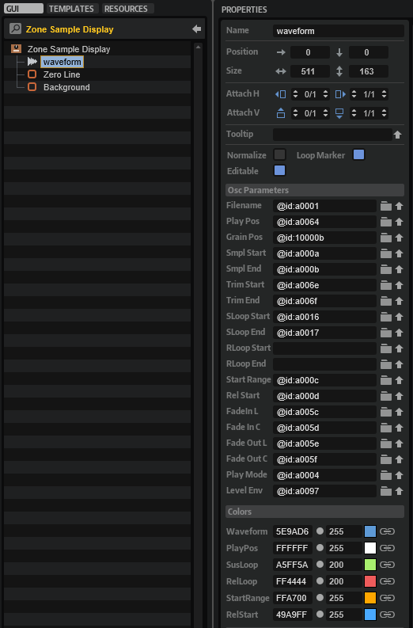

/ HALion Developer Resource / HALion Tutorials & Guidelines / How-tos /
Drag-and-Drop Sample Import
For your macro page to accept sample import by drag and drop, you need a Drop control, the Sample Display template, and a UI script.
Example VST Preset
The following section describes how to access Templates and edit UI scripts.
To explore the templates in this example:
- Open the Macro Page Designer, go to the Templates Tree and select the template that you want to explore.
- Click Edit Element
 to examine the template.
to examine the template.
To edit the UI script:
- Open the Macro Page Designer and select the topmost element in the GUI Tree.
- Go to the Properties section and click Edit Script to open the internal script editor.
Prerequisites
- You have a program that contains a sample zone and a macro page.
How the Elements Interact
Sample Display
The Sample Display template is the same as the one that comes with the Basic Controls library. The Template Parameters of the Sample Display template are fixed, displaying only the waveform, not the FFT. The Scope defines the zone where the sample is loaded, here @0:Sample Zone. See Sample Display > Template Parameters for further details.

You can find more properties inside the Sample Display template. The screenshot shows how they are set up.

In the current example, the original UI script that came with the Sample Display template has been replaced with the UI script on the macro page, primarily to implement the Drag Group Callbacks needed for the drag-and-drop functionality. Drag Group Callbacks are called when you drop something on a Drop control.
SampleDropArea
The Drop control is named 'SampleDropArea' and has the same position and size as the Sample Display template.

Its name 'SampleDropArea' is used by the Drag Group Callbacks as a condition for calling other functions to import the sample. The sample import as implemented in the UI script supports sample files from the hard disk as well as regions from Cubase. Take a look at the firstRegion function for more details on this.
-- Drag & Drop Sample Import
zone = getElement():getZone()
function firstRegion(data)
if data then
if data.files and data.files[1] then
local af = AudioFile.open(data.files[1])
if af.valid then
return af, 0, af.length
end
end
if data.regions and data.regions[1] then
local af = AudioFile.open(data.regions[1].filename)
if af.valid then
return af, data.regions[1].start, data.regions[1].length
end
end
end
return { valid = false }, 0, -1
end
function onDropFeedback(viewname, draginfo, copy, data)
if viewname == "SampleDropArea" then
local af, start, length = firstRegion(data)
return af.valid
end
end
function onDropGetInfo(viewname, info)
return { info = info, copy = true, move = false }
end
function importSample(sample, start, length)
if sample.valid then
startUndoBlock("Import Sample " .. sample.fileName)
zone:setParameter("SampleOsc.Filename", sample.fileName)
zone:setParameter("SampleOsc.SampleStart", start)
zone:setParameter("SampleOsc.SampleEnd", start + length)
-- check loops
local loop = sample.loops[1]
zone:setParameter("SampleOsc.SustainLoopModeA", 1)
local ls = loop and (loop.loopStart < loop.loopEnd) and math.max(start, math.min(loop.loopStart, start + length)) or start
local le = loop and (loop.loopStart < loop.loopEnd) and math.max(start, math.min(loop.loopEnd, start + length)) or start + length
zone:setParameter("SampleOsc.SustainLoopStartA", ls)
zone:setParameter("SampleOsc.SustainLoopEndA", le)
endUndoBlock()
SampleFileName = sample.fileName
end
end
function onDropInsert(viewname, draginfo, copy, data)
if viewname == "SampleDropArea" then
local sample, start, length = firstRegion(data)
importSample(sample, start, length)
end
end
defineParameter("SampleFileName", nil, "Drag a sample onto the waveform display to import it.")
Info
Hovering over the 'Info' button on the macro page displays the file path of the sample. The 'Info Button' Template and the 'Info' Disable Group are both linked to the @SampleInfo UI variable, which controls whether the 'Info' Disable Group and its contents are displayed. The 'Info' Disable Group contains a Text and a Decor control. The information to be displayed by the Text control is set by the SampleFileName parameter of the UI script.